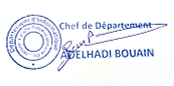

| 9h A 10h30 | 10h30 A 12h | 12h15 A 13h45 | 13h45 A 15h15 | 15h30 A 17h | 17h A 18h30 | |
|---|---|---|---|---|---|---|
| Lundi | Programmation Python 2 Prof M.Laraqui Cours - Amphi A |
Algorithmes Et
Programmation C 2 Cours - Prof H.Oudani Cours – Amphi A |
Algorithmes Et
Programmation C 2 Td/Tp Grp1 – Salle P2 Prof H.Oudani |
Programmation Python 2 Td/Tp Grp 3- Salle P2 Prof A.Elouardi |
Programmation Python 2 Td/Tp Grp 2- Salle P2 Prof A.Elouardi |
|
| Mardi | Programmation Python2 Td/Tp Grp 1- Salle P2 Prof A.Elouardi |
Digital Skills &
Intelligence Artificielle Cours – Amphi A Prof A. Elouardi |
Digital Skills &
Intelligence Artificielle Td/Tp - Amphi A Prof A. Elouardi |
|||
| Mercredi | Algorithmes Et
Programmation C 2 Td/Tp Grp2 – Salle P2 Prof H.Oudani |
Algèbre 2 TD – Amphi A Prof I. Boutaayamo |
Analyse 2 Td – Amphi A Prof A.Hadri |
|||
| Jeudi | Traitement Du Signal Cours – Amphi A Prof H.Azzahhafi |
Traitement Du Signal TD - Amphi A Prof H.Azzahhafi |
||||
| Vendredi | Algèbre 2 Cours – Amphi C Prof I. Boutaayamo |
Analyse 2 Cours – Amphi C Prof A.Hadri |
||||
| Samedi | Programmation Web 1 Td/Tp G2– Salle P2 Prof A.Hakem |
Programmation Web 1 Cours – Salle P1 Prof K.Omari |
Programmation Web 1 Td/Tp G1– Salle P2 Prof K.Omari |